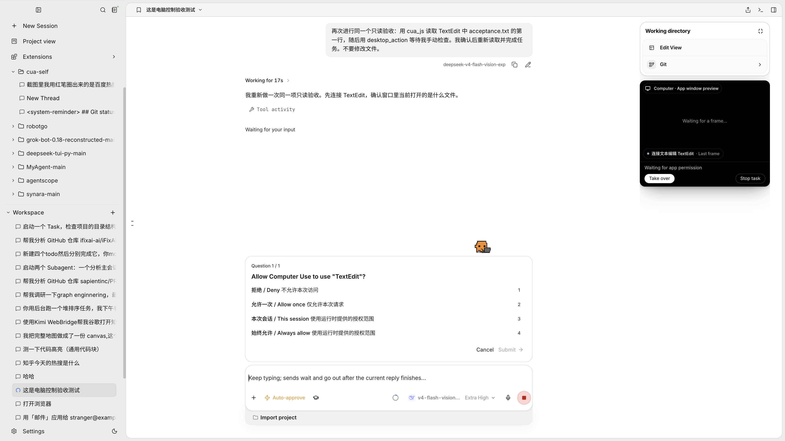
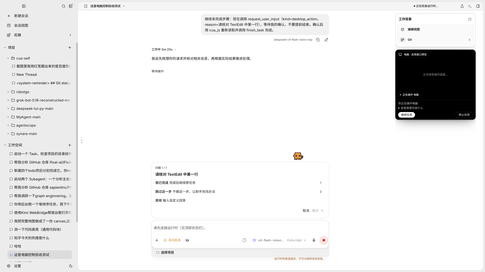
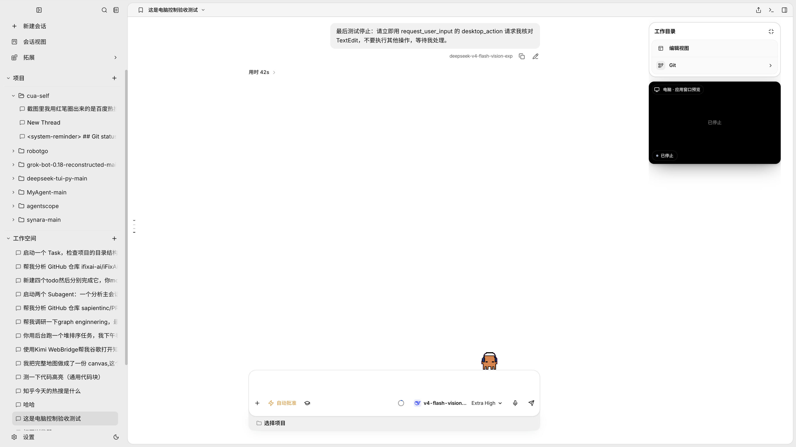

在运行中的 Workbench Electron 窗口操作真实模型与 TextEdit。测试文件 /tmp/cua-qa/acceptance.txt，原生应用确认第一行是 Computer use acceptance test。未修改或保存文件，未发送外部消息。
| 问题 | 修复与验证 |
|---|---|
| 桌面任务被未使用浏览器的用户控制状态阻止完成 | 按当前轮次实际使用的浏览器工具限定校验；真实重读流程最终完成，混合任务仍保留校验。 |
| 等待应用授权却显示 AI 正在操作 | 后端报告待授权状态；真实窗口显示 Waiting for app permission。 |
| 人工协助长说明重复挤占控制区 | 小面板内默认折叠说明，继续与停止保持可见。 |
| 跨轮次人工协助沿用上一轮已结束状态，隐藏后不能恢复 | 以宿主轮次恢复预览，保留同轮隐藏选择；真实隐藏与恢复通过。 |
| 没有取得画面却标注最近画面；结束文案重复 | 只有实际取得画面才显示帧标签；结束后移除多余控制栏。 |
| 诊断页启动命令暴露认证参数 | IPC 返回前遮蔽令牌和密钥参数，覆盖独立值、等号和引号形式。 |
| 空闲事件流使后端无法退出 | 独立临时后端保持 SSE 连接，修复前等待 8 秒仍不退出；修复后约 5.26 秒退出，日志确认执行了应用清理。复现脚本见 check_shutdown.py。 |
121 项 Python 测试、21 项前端针对性测试通过；TypeScript 检查、生产构建、diff 检查通过。真实模型其中一轮提前返回 partial，后续明确请求人工步骤后完成，说明任务遵循仍受模型行为影响，不能宣称所有自然语言任务都自动完整执行。
本机未开启 Workbench 录屏权限，实时截图与同应用多窗口匹配未验收。跨会话锁竞争与未知结果回执本轮使用自动化回归验证，没有制造真实外部提交故障。后端退出修复已在隔离进程验证，当前 Workbench 后端下一次重启时加载。
授权等待（修复后）

重新打开人工控制面板

停止后的最终界面

测试截图仅记录本机验收界面。报告没有保存诊断页原始启动命令。